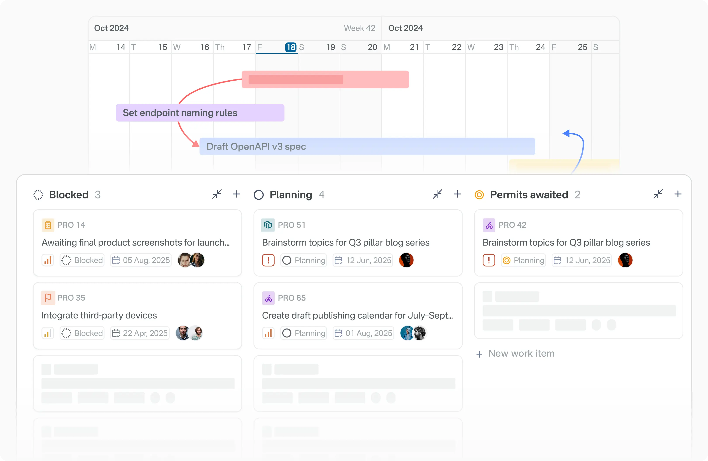
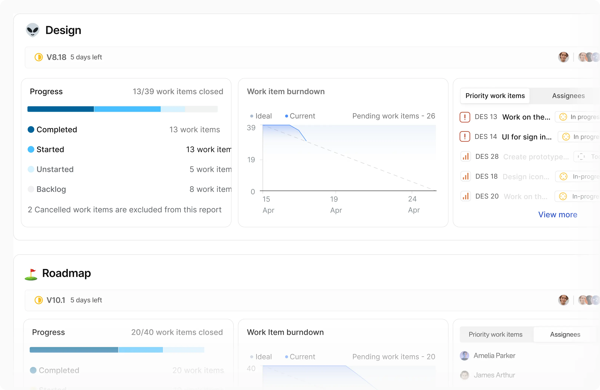
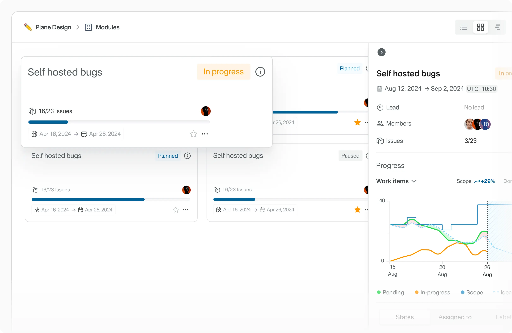

Plane: the open-source project tracker that's eating Jira's lunch
Plane is an open-source project management platform — think Jira or Linear, but you can run it on your own box. Issues, cycles (their name for sprints), modules, docs, and a triage inbox all live in one app. It's sitting at ~58k stars on GitHub as of today and gets pushed multiple times a day; the repo has been active since late 2022, so this isn't a weekend hack — it's a mature product with a real company (Plane, makers at plane.so) behind it.
The pitch in their README is blunt: track issues, run cycles, manage product roadmaps "without the chaos of managing the tool itself." Anyone who has administered a Jira instance knows exactly what chaos they mean.
Why you'd actually use it
- You're off Jira but can't afford Linear per-seat. A 12-person startup paying $8–16/user/month adds up fast. Self-hosted Plane is free, and the UX is genuinely close to Linear — keyboard-first issue views, drag-and-drop kanban, cycle burn-downs.
- Your client work needs hard data isolation. Agencies running multiple client projects often can't put everything in a shared SaaS tenant. Plane self-hosted means each client's workspace can live on its own instance.
- You want sprint planning without ceremony. Cycles give you date-bounded sprints with scope visualization. If your team just needs "what's in this two-week window," it does that without Jira's board-configuration swamp.
- Roadmap communication with non-engineers. Modules let you group work items into features (e.g., "Billing v2") and see progress across cycles. Product folks get the roadmap view; engineers keep working in kanban.
- Triage inbox for OSS maintainers. The triage feature collects incoming bugs/issues into one queue so maintainers can bulk-label and assign instead of drowning in a flat list.
Getting started
The fastest path is Plane Cloud (free signup at app.plane.so), but if you're reading this you probably want to self-host. The official method is a Docker-based installer script (per official docs at developers.plane.so/self-hosting):
- Install Docker and Docker Compose v2 on your server (any Linux box with 4GB RAM minimum works fine).
- Download the installer:
curl -fsSL https://raw.githubusercontent.com/makeplane/plane/master/deploy/selfhost/install.sh | bash - The installer creates a
plane-appdirectory and prompts you to configure the environment file:cd plane-app nano .env # Key values to set: # SECRET_KEY=... (generated for you) # WEB_URL=http://your-domain.com # CORS_ALLOWED_ORIGINS=http://your-domain.com - Start everything up:
This brings up the web frontend, API (Django), workers, RabbitMQ, Redis, MinIO, and PostgreSQL containers../setup.sh docker compose up -d - Open
http://your-domain.com, create the first admin account, and set up your first workspace and project.
Behind a reverse proxy? Terminate TLS at nginx/Caddy/Traefik and point WEB_URL at the HTTPS origin, otherwise the frontend will fight you on mixed-content requests.



Code & config samples
Plane has a REST API (it's Django under the hood). You can create work items programmatically instead of clicking around:
curl -X POST "https://your-domain.com/api/v1/workspaces/my-workspace/projects/<project_id>/issues/" \
-H "Authorization: Bearer <API_KEY>" \
-H "Content-Type: application/json" \
-d '{
"name": "Fix login redirect loop",
"description_html": "<p>Users on Safari get stuck after OAuth callback</p>",
"priority": "high"
}'A minimal docker-compose override for pinning resource limits on a small VPS:
# docker-compose.override.yml
services:
plane-api:
deploy:
resources:
limits:
memory: 1g
plane-worker:
deploy:
resources:
limits:
memory: 512mAnd a cron-friendly backup of Postgres, which is the only container whose data you truly can't lose:
docker compose exec plane-db pg_dump -U plane plane > plane-backup-$(date +%F).sqlWhat's new
No tagged release landed in the intel window for this write-up, but the repo shows commits pushed on August 24, 2026 — daily activity on the preview default branch is normal for this project. The team ships continuously and publishes release notes through their forum and docs changelog, so check the releases page before upgrading your self-hosted install. Their upgrade path is documented as "pull new installer, run setup.sh, docker compose up" — always snapshot your database first.
Troubleshooting
- Login works but pages fail to load assets / blank screen. Cause:
WEB_URLdoesn't match the origin you're browsing, or CORS origins weren't updated behind a proxy. Fix: set bothWEB_URLandCORS_ALLOWED_ORIGINSin.envto the exact scheme+domain users hit, then restart the web/API containers. - Uploads disappear after redeploying. Cause: file uploads live in MinIO by default; if the MinIO volume wasn't persisted, attachments vanish. Fix: make sure the
plane-minio-datavolume is declared and never pruned by cleanup scripts. - Email invites never arrive. Cause: SMTP isn't configured, so the worker silently drops mail. Fix: fill in the
EMAIL_HOST_*variables in.envand restart; test with the password-reset flow rather than invites alone. - Everything grinds to a halt on a 2GB VPS. Cause: the full stack (Django + workers + RabbitMQ + Redis + Postgres + MinIO) wants more headroom than small instances give. Fix: run on 4GB+, add swap, and cap container memory as shown above.
- Installer script fails mid-run and reruns won't start clean. Cause: partial compose state from the failed attempt. Fix:
docker compose down -vinside the plane-app dir (this deletes volumes — back up first), fix the reported error, and rerun./setup.sh.